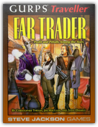
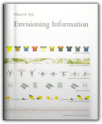
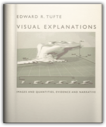
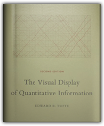
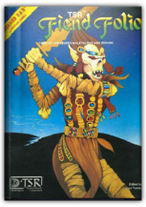
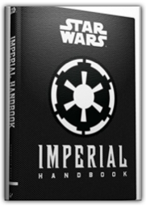
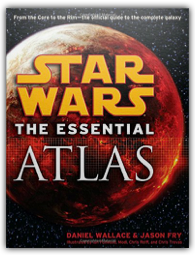
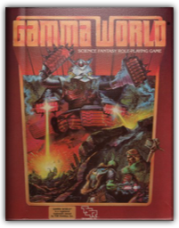
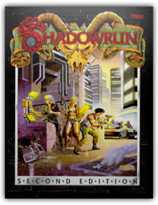

|

GURPS Traveller: Far Trader
Christopher Thrash, Jim MacLean, Steve Daniels

Next to the mercenary game, the 'independent trader' campaign is the most popular among Traveller players. This new book is the complete support volume for the Trader campaign. You can: * Develop sector-wide trade routes, following the demands of commerce on an interplanetary scale. * Start your own character-run business, raise capital, and finance your money-making ventures. * Make contacts, find niche markets, and exploit opportunities the big corporations miss. * Learn what it takes to run a successful commercial starship. * Expand your world with 15 new character templates. * Run entire mercantile campaigns, including free traders, smugglers, and pirates.

Envisioning Information
Edward R. Tufte
This book celebrates escapes from the flatlands of both paper and computer screen, showing superb displays of high-dimensional complex data. The most design-oriented of Edward Tufte's books, Envisioning Information shows maps, charts, scientific presentations, diagrams, computer interfaces, statistical graphics and tables, stereo photographs, guidebooks, courtroom exhibits, timetables, use of color, a pop-up, and many other wonderful displays of information. The book provides practical advice about how to explain complex material by visual means, with extraordinary examples to illustrate the fundamental principles of information displays. Topics include escaping flatland, color and information, micro/macro designs, layering and separation, small multiples, and narratives. Winner of 17 awards for design and content. 400 illustrations with exquisite 6- to 12-color printing throughout. Highest quality design and production.

Visual Explanations: Images and Quantities, Evidence and Narrative
Edward R. Tufte
Describes design strategies - the proper arrangement in space and time of images, words, and numbers - for presenting information about motion, process, mechanism, cause, and effect. Examines the logic of depicting quantitative evidence.

The Visual Display of Quantitative Information
Edward R. Tufte
The classic book on statistical graphics, charts, tables. Theory and practice in the design of data graphics, 250 illustrations of the best (and a few of the worst) statistical graphics, with detailed analysis of how to display data for precise, effective, quick analysis. Design of the high-resolution displays, small multiples. Editing and improving graphics. The data-ink ratio. Time-series, relational graphics, data maps, multivariate designs. Detection of graphical deception: design variation vs. data variation. Sources of deception. Aesthetics and data graphical displays. This is the second edition of The Visual Display of Quantitative Information. Recently published, this new edition provides excellent color reproductions of the many graphics of William Playfair, adds color to other images, and includes all the changes and corrections accumulated during 17 printings of the first edition.

Fiend Folio: Tome of Creatures Malevolent and Benign:
Don Turnbull
This tome contains alphabetical listings of monsters designed for use with the Advanced Dungeons & Dragons game system. Each creature is described and most are illustrated for easy identification.

Imperial Handbook: A Commander's Guide
Daniel Wallace
The exciting next book in the bestselling Jedi/Sith/Bounty Hunter series has arrived! The Empire has taken hold of the galaxy, and high-ranking officials from each branch of the military have created an Imperial Handbook, compiling tactical guidelines and procedures as well as mission reports and classified documents for all newly ascending commanders. This comprehensive manual details secrets of Imperial battle tactics, acceptable actions for bringing swift justice to traitors, and the Emperor's long-term plan for galactic military domination. After the Battle of Endor, this copy of the Imperial Handbook fell into the hands of the Rebel Alliance. Well-known rebels provide a humorous running counter-commentary to the official Imperial propaganda in the form of handwritten annotations in the margins of the pages.

Star Wars: The Essential Atlas
Daniel Wallace, Jason Fry
Navigate the Star Wars universe as you never have before–with this fully illustrated, full-color guide that maps the entire galaxy.
The Bounty Hunter Code: From the Files of Boba Fett
Daniel Wallace, Ryder Windham, Jason Fry
Around the time legendary bounty hunter Boba Fett tumbled into the Great Pit of Carkoon, the Rebel Alliance discovered a secure, blast-proof bounty hunter’s case holding Boba Fett’s personal items. For years it remained hidden away. But now all who wish may unlock the secrets held within . . . .

Gamma World 2nd edition [BOX SET]
James Ward
SET INCLUDES: * 64-page Basic Rules Booklet. * 32-page Adventure Booklet. * Double-sided color mapsheet with post-apocalypse America on one side and the ruined city of Pitz Burke on the other.

Shadowrun
Jordan Weisman
Magic has returned to the world, and elves, dwarfs, orks, and trolls have assumed their true forms. Creatures of the wild have changed as well, becoming things of myth and legend. And technology has changed people, too. No longer mere flesh, many humans have turned to artificial enhancements called cyberware, and become more than human. Modern man is stronger, smarter, and faster. In the world of 2053, when the megacorporations want something done but don't want to dirty their hands, it's a showdown they need, and you they come to. Shadowrun, Second Edition updates, revises, and expands the popular Shadowrun game system. This new edition is fully compatible with most existing Shadowrun sourcebooks, adventures, and characters. |
 Made with Delicious Library
Made with Delicious Library